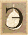

| |
СН 29: Нага Саньютта - Наги
|
|
ти
четыре саньютты (СН 29-32) можно рассматривать вместе,
поскольку все они повествуют о классах живых существ,
которые, по крайней мере с современной перспективы,
считаются мифологическими. В каждой сутте Будда рассматривает
типы существ и камму, которая приводит к такому рождению.
Если рассматривать все виды существ и все виды дарений,
то получается довольно большой объём однотипных коротких
сутт.
Наги
– это змееподобные существа, могучие и мистические,
которые, как считается, живут под землёй в Гималаях
или же в глубинах океана. Также считается, что наги
обладают доступом к скрытым сокровищам и оказывают
услуги тем людям, которые делают им жертвования. Они
могут появляться на земле и временно принимать человеческий
облик. В монашеском уставе (Виная) даже есть история
о том, как нага, приняв человеческий облик, получил
монашеское посвящение, но затем был изгнан из Сангхи.
В результате даже сегодня при посвящении в монахи
кандидат должен подтвердить, что является человеческим
существом, а не нагом в человеческом обличии (Вин
I 86-87).
Все
эти существа не очень хорошо вписываются в рамки стандартной
буддийской космологии. Считается, что наги и гандхаббы
управляются двумя из Четырёх Великих Царей, проживающих
в небесном мире с аналогичным названием. Однако здесь
нагов и гандхабб едва ли можно описать как проживающих
в небесном мире. Скорее, складывается впечатление,
что эти существа живут в некой промежуточной зоне
между миром людей и самым нижним небесным миром –
сумеречные существа, описание которых поразительно
схоже с мифологиями различных культур.
|

|
СН
29.1 Суддхика сутта - Простое (перевод:
SV)
(Четыре вида рождения нагов) |
|
|
СН
29.2 Панитатара сутта - Превосходят
(перевод: SV)
(Степени превосходства нагов) |
|
|
СН
29.3 Патхама упосатха сутта - Упосатха
I (перевод: SV)
(Наги могут соблюдать упосатху) |
|
|
СН
29.4-6 Сутты
(Схожие
сутты с предыдущей) |
|
|
СН
29.7 Патхама сута сутта - Услышал I
(перевод: SV)
(Причины рождения среди
нагов) |
|
|
СН
29.8-10 Сутты
(Схожие
сутты с предыдущей) |
|
|
СН
29.11 Аннадаяка андаджа сутта - Даяние
как поддержка (перевод: SV)
(Схожая
сутта с предыдущими) |
|
|
СН
29.12-20 Сутты (перевод: SV)
(Схожие
сутты с предыдущими) |
|
|
СН
29.21-50 Сутты
(Схожие
сутты с предыдущими) |
|